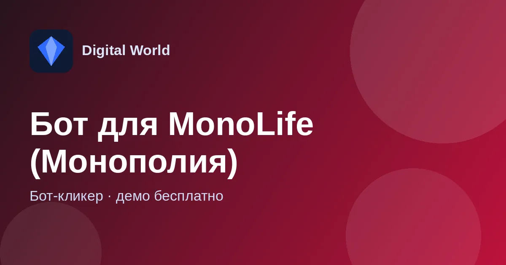

Бот для MonoLife — автоигра в «Монополию»
Автоигра для «Монополии» MonoLife и расширение для Chrome, которое само находит подходящий стол.

Что это за бот
Бот играет по продуманной логике покупок: проверяет, хватит ли денег, при нехватке может взять кредит, следит за монополиями — своими и соперников.
Отдельно есть расширение для Chrome: выставляете, за какой стол садиться, нажимаете «Старт» — и оно ловит игру по фильтру.
Есть основная версия и тестовая — в тестовой появился звуковой сигнал на капчу.
Что умеет бот
Покупки
Если есть кнопка «Купить» — проверяет, хватит ли денег, и покупает. Не хватает — берёт кредит, если он доступен.
Монополии
Если собирается своя монополия — покупает при достатке наличных и домиков; если собирается монополия у соперника — покупает в любом случае.
Инвест и захват
Инвестиции и захват выбирает ближе к своей монополии.
Расширение «по фильтру»
Расширение Chrome садится за стол по заданным настройкам.
Поиск игры по фильтру
Расширение для Chrome выложено в отдельной теме: выставьте настройки стола, нажмите «Старт» — и расширение займёт место за подходящим столом.
Как скачать и запустить
- Откройте тему бота во ВКонтакте и скачайте архив по ссылке из первого сообщения.
- Распакуйте архив (пароль 1234) в любую папку.
- Запустите игру и бота, выставьте настройки и нажмите старт.
Требования
- Windows
- Папка «питон» должна лежать рядом с ботом
- Для поиска столов — Google Chrome
Демо-версия и продление
Попробовать бота можно бесплатно. Чтобы пользоваться дальше, продлите ключ на любое количество дней на Plati.Market или напишите разработчику в личные сообщения.
Частые вопросы
Сколько стоит попробовать?
Демо-версия бесплатна. Пароль на архив — 1234.
Бот зависает или не запускается — что делать?
Чаще всего мешают блокировки в интернете. Попробуйте запустить бота через VPN; не каждый VPN помогает — если не вышло, попробуйте другой или другие настройки.
Где задать вопрос?
В теме бота во ВКонтакте — там же новости и обновления — или разработчику в Telegram.